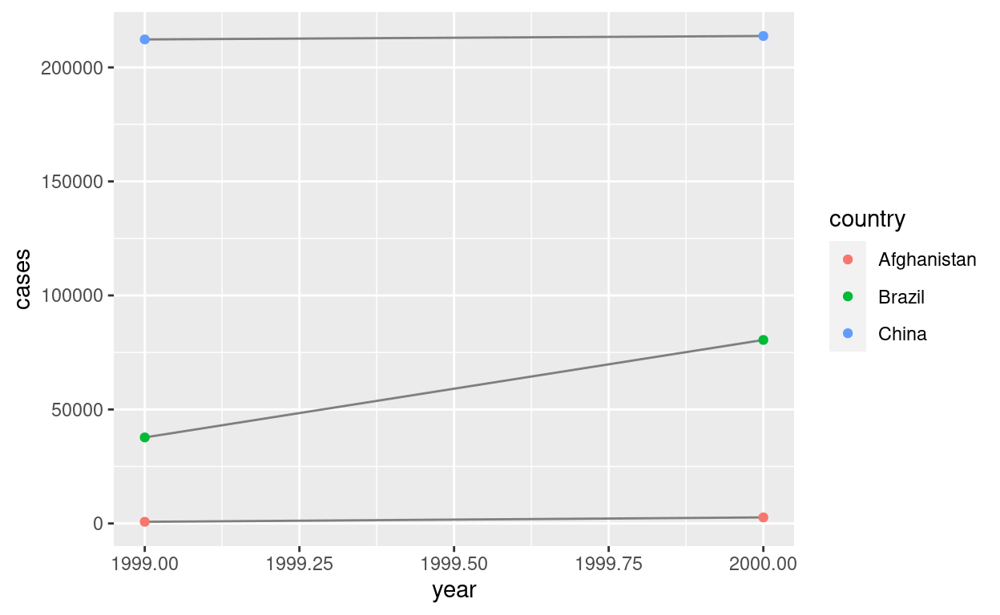

Ilustración por Emilio Morones.
Introducción
En esra sección aprenderás sobre la manipulación de datos, el arte de llevar los datos a R en una forma útil para la visualización y el modelado. La manipulación de datos es muy importante: sin ella, no puede trabajar con sus propios datos. Hay tres partes principales en la domación de los datos:
Esta sección se procederá de la siguiente manera:
En Tibbles, aprenderás sobre la variante del
dataframeque usamos usualmente en Ciencia de Datos: eltibble. Aprenderás qué los hace diferentes de losdataframenormales y cómo puede construirlos “a mano”.En la Importación, aprenderás cómo obtener sus datos del disco y en R. Nos enfocaremos en formatos rectangulares de texto sin formato, pero le daremos sugerencias sobre paquetes que ayudan con otros tipos de datos.
En Tidy, aprenderás sobre datos ordenados, una forma coherente de almacenar sus datos que facilita la transformación, la visualización y el modelado. Aprenderá los principios subyacentes y cómo ordenar los datos.
La Domación de datos también abarca la transformación de datos, sobre la que ya haz aprendido un poco. Ahora nos centraremos en nuevas habilidades para tres tipos específicos de datos que encontrarás con frecuencia en la práctica:
Los Datos relacionales le brindarán herramientas para trabajar con múltiples conjuntos de datos interrelacionados.
Los Strings introducirán expresiones regulares, una poderosa herramienta para manipular cadenas.
Los Factores son cómo R almacena datos categóricos. Se utilizan cuando una variable tiene un conjunto fijo de valores posibles o cuando desea utilizar un orden no alfabético de una cadena.
Los Dates & Times le proporcionarán las herramientas clave para trabajar con fechas y horas.
Tibbles
Introducción
Los Tibbles son dataframes, pero modifican algunos comportamientos antiguos para hacer la vida un poco más fácil. R es un lenguaje antiguo, y algunas cosas que eran útiles hace 10 o 20 años ahora se interponen en el camino. Es difícil cambiar la base R sin romper el código existente, por lo que la mayor parte de la innovación se produce en paquetes.
Aquí describiremos el paquete tibble, que proporciona dataframe obstinados que facilitan un poco el trabajo en tidyverse. En la mayoría de los lugares, usarémos el término tibble y dataframe indistintamente; cuando se quiera llamar la atención sobre el dataframe integrado de R, se denominarán data.frames.
Requisitos previos
En esta sección exploraremos el paquete tibble, parte del núcleo tidyverse.
library(tidyverse)
# O bien
library(tibble)Creando tibbles
Casi todas las funciones que utilizarán con el tidyverse producen tibbles, ya que los tibbles son una de las características unificadoras del tidyverse. La mayoría de los otros paquetes de R usan dataframes regulares, por lo que es posible que desee convertir un dataframe en un tibble. Puedes hacer eso con as_tibble():
as_tibble(iris)Puede crear un nuevo tibble a partir de vectores individuales con tibble(), tibble() reciclará automáticamente las entradas de longitud 1 y le permitirá hacer referencia a las variables que acaba de crear, como se muestra a continuación.
tibble(
x = 1:5,
y = 1,
z = x ^ 2 + y
)Si ya está familiarizado con data.frame(), tenga en cuenta que tibble() hace mucho menos: nunca cambia el tipo de las entradas (por ejemplo, ¡nunca convierte cadenas en factores!), nunca cambia los nombres de las variables, y nunca crea nombres de filas.
Es posible que un tibble tenga nombres de columna que no sean nombres de variable R válidos, también conocidos como nombres no sintácticos. Por ejemplo, es posible que no comiencen con una letra o que contengan caracteres inusuales como un espacio. Para hacer referencia a estas variables, debe rodearlas con comillas invertidas ( ` ):
tb <- tibble(
`:)` = "smile",
` ` = "space",
`2000` = "number"
)
tbTambién necesitará las comillas inversas cuando trabaje con estas variables en otros paquetes, como ggplot2, dplyr y tidyr.
Otra forma de crear un tibble es con tribble(), abreviatura de tibble transpuesto, tribble() está personalizado para la entrada de datos en el código: los encabezados de las columnas se definen mediante fórmulas (es decir, comienzan con ~) y las entradas están separadas por comas. Esto hace posible disponer pequeñas cantidades de datos de forma fácil de leer.
tribble(
~x, ~y, ~z,
#--|--|----
"a", 2, 3.6,
"b", 1, 8.5
)A menudo se agrega un comentario (la línea que comienza con #), para dejar muy claro dónde está el encabezado.
Tibbles frente a data.frame
Hay dos diferencias principales en el uso de un tibble frente a un marco de datos clásico: impresión y subconjuntos.
Impresión:
tibblestiene un método de impresión refinado que muestra solo las primeras 10 filas y todas las columnas que caben en la pantalla. Esto hace que sea mucho más fácil trabajar con datos grandes. Además de su nombre, cada columna informa su tipo, una buena característica tomada destr():
tibble(
a = lubridate::now() + runif(1e3) * 86400,
b = lubridate::today() + runif(1e3) * 30,
c = 1:1e3,
d = runif(1e3),
e = sample(letters, 1e3, replace = TRUE)
)Tibbles está diseñado para que no abrume accidentalmente su consola cuando imprime grandes
dataframe. Pero a veces necesita más salida que la pantalla predeterminada. Hay algunas opciones que pueden ayudar.Primero, puede imprimir explícitamente con
print()eldataframey controlar el número de filas(n)y el ancho de la pantalla,width = Infmostrará todas las columnas:
nycflights13::flights %>%
print(n = 10, width = Inf)## # A tibble: 336,776 x 19
## year month day dep_time sched_dep_time dep_delay arr_time sched_arr_time
## <int> <int> <int> <int> <int> <dbl> <int> <int>
## 1 2013 1 1 517 515 2 830 819
## 2 2013 1 1 533 529 4 850 830
## 3 2013 1 1 542 540 2 923 850
## 4 2013 1 1 544 545 -1 1004 1022
## 5 2013 1 1 554 600 -6 812 837
## 6 2013 1 1 554 558 -4 740 728
## 7 2013 1 1 555 600 -5 913 854
## 8 2013 1 1 557 600 -3 709 723
## 9 2013 1 1 557 600 -3 838 846
## 10 2013 1 1 558 600 -2 753 745
## arr_delay carrier flight tailnum origin dest air_time distance hour minute
## <dbl> <chr> <int> <chr> <chr> <chr> <dbl> <dbl> <dbl> <dbl>
## 1 11 UA 1545 N14228 EWR IAH 227 1400 5 15
## 2 20 UA 1714 N24211 LGA IAH 227 1416 5 29
## 3 33 AA 1141 N619AA JFK MIA 160 1089 5 40
## 4 -18 B6 725 N804JB JFK BQN 183 1576 5 45
## 5 -25 DL 461 N668DN LGA ATL 116 762 6 0
## 6 12 UA 1696 N39463 EWR ORD 150 719 5 58
## 7 19 B6 507 N516JB EWR FLL 158 1065 6 0
## 8 -14 EV 5708 N829AS LGA IAD 53 229 6 0
## 9 -8 B6 79 N593JB JFK MCO 140 944 6 0
## 10 8 AA 301 N3ALAA LGA ORD 138 733 6 0
## time_hour
## <dttm>
## 1 2013-01-01 05:00:00
## 2 2013-01-01 05:00:00
## 3 2013-01-01 05:00:00
## 4 2013-01-01 05:00:00
## 5 2013-01-01 06:00:00
## 6 2013-01-01 05:00:00
## 7 2013-01-01 06:00:00
## 8 2013-01-01 06:00:00
## 9 2013-01-01 06:00:00
## 10 2013-01-01 06:00:00
## # … with 336,766 more rowsTambién puede controlar el comportamiento de impresión predeterminado configurando opciones:
opcions(tibble.print_max = n, tibble.print_min = m): si hay más denfilas, imprima solomfilas. Utilice opcionesoptions(tibble.print_min = Inf)para mostrar siempre todas las filas.Utilice las
opcions(tibble.width = Inf)para imprimir siempre todas las columnas, independientemente del ancho de la pantalla.Puede ver una lista completa de opciones consultando la ayuda del paquete con
package?tibble.Una última opción es utilizar el visor de datos integrado de RStudio para obtener una vista desplazable del conjunto de datos completo. Esto también suele ser útil al final de una larga cadena de manipulaciones.
nycflights13::flights %>%
View()Sub:
- Hasta ahora, todas las herramientas que ha aprendido han funcionado con marcos de datos completos. Si desea extraer una sola variable, necesita algunas herramientas nuevas,
$y[[.[[puede extraer por nombre o cargo;$solo extrae por nombre pero es un poco menos tipeado.
df <- tibble(
x = runif(5),
y = rnorm(5)
)
# Extract by name
df$x## [1] 0.9818413 0.5696706 0.5145137 0.0118580 0.6171974df[["x"]]## [1] 0.9818413 0.5696706 0.5145137 0.0118580 0.6171974df[[1]]## [1] 0.9818413 0.5696706 0.5145137 0.0118580 0.6171974- Para usarlos en un pipe, deberá usar el marcador de posición especial
.:
df %>% .$x## [1] 0.9818413 0.5696706 0.5145137 0.0118580 0.6171974df %>% .[["x"]]## [1] 0.9818413 0.5696706 0.5145137 0.0118580 0.6171974- En comparación con un
data.frame, lostibblesson más estrictos: nunca hacen coincidencias parciales y generarán una advertencia si la columna a la que está intentando acceder no existe.
Interactuar con código antiguo
Algunas funciones antiguas no funcionan con tibbles. Si encuentra una de estas funciones, use as.data.frame() para convertir un tibble en un data.frame:
class(as.data.frame(tb))## [1] "data.frame"La razón principal por la que algunas funciones antiguas no funcionan con tibble es la función [. No usamos [mucho en este libro porque dplyr::filter() y dplyr::select() le permiten resolver los mismos problemas con un código más claro (pero aprenderá un poco sobre esto en subconjuntos de vectores). Con los dataframes base R, [ a veces devuelve un dataframe y, a veces, devuelve un vector. Con tibbles, [ siempre devuelve otro tibble.
Ejercicios 1
1 - ¿Cómo se puede saber si un objeto es un tibble? (Sugerencia: intente imprimir mtcars, que es un dataframe normal).
is_tibble(___)
class(___)Hint: Utilice la base de datos.
is_tibble(mtcars)
class(mtcars)2 - Compara y contraste las siguientes operaciones en un data.frame y un tibble equivalente.
df <- data.frame(abc = 1, xyz = "a")
df$x## [1] "a"df[, "xyz"]## [1] "a"df[, c("abc", "xyz")]3 - Si tiene el nombre de una variable almacenada en un objeto, p. Ej. var <- "mpg"
4 - Practica referirse a nombres no sintácticos en el siguiente marco de datos mediante:
annoying <- tibble(
`1` = 1:10,
`2` = `1` * 2 + rnorm(length(`1`))
)1
annoying[[___]]
# o bien
annoying$___Hint: Coloca el nombre de la variable.
annoying[["1"]]
# o bien
annoying$`1`1 vs 2.
ggplot(annoying, aes(x = ___, y = __)) +
geom_point()Hint: Coloca las variables en el parámetro aes.
ggplot(annoying, aes(x = `1`, y = `2`)) +
geom_point()3 que es 2 dividido por 1.
mutate(annoying, `3` = ___ / ___)Hint: Coloca las variables en el parámetro de mutate.
mutate(annoying, `3` = `2` / `1`)one y two.
rename(annoying, one = ___, two = ___)Hint: Coloca las variables en el parámetro de rename.
rename(annoying, one = `1`, two = `2`)tibble::enframe()?
enframe(c(a = 1, b = 2, c = 3))Importación
Trabajar con datos proporcionados por paquetes R es una excelente manera de aprender las herramientas de la ciencia de datos, pero en algún momento querrá dejar de aprender y comenzar a trabajar con sus propios datos. En este capítulo, aprenderá a leer archivos rectangulares de texto sin formato en R. Aquí, solo arañaremos la superficie de la importación de datos, pero muchos de los principios se traducirán a otras formas de datos. Terminaremos con algunas sugerencias sobre paquetes que son útiles para otros tipos de datos.
Requisitos previos
En este capítulo, aprenderá a cargar archivos planos en R con el paquete readr, que es parte del núcleo tidyverse.
library(tidyverse)
# O bien
library(readr) Primeros pasos
La mayoría de las funciones de readr están relacionadas con convertir archivos planos en dataframes:
read_csv()lee archivos delimitados por comas,read_csv2()lee archivos separados por punto y coma (común en países donde, se usa como el lugar decimal),read_tsv()lee archivos delimitados por tabulaciones yread_delim()lee archivos con cualquier delimitador.read_fwf()lee archivos de ancho fijo. Puede especificar campos por sus anchos confwf_widths()o su posición confwf_positions(),read_table()lee una variación común de archivos de ancho fijo donde las columnas están separadas por espacios en blanco.read_log()lee archivos de registro de estilo Apache. (Pero también echa un vistazo awebreadr, que está construido sobreread_log()y proporciona muchas más herramientas útiles).
Todas estas funciones tienen una sintaxis similar: una vez que domina una, puede utilizar las demás con facilidad. Durante el resto de este capítulo, nos centraremos en read_csv(). Los archivos csv no solo son una de las formas más comunes de almacenamiento de datos, sino que una vez que comprenda read_csv(), puede aplicar fácilmente sus conocimientos a todas las demás funciones de readr.
El primer argumento de read_csv() es el más importante: es la ruta al archivo a leer.
heights <- read_csv("data/heights.csv")Cuando ejecutas read_csv() imprime una especificación de columna que da el nombre y tipo de cada columna. Esa es una parte importante de readr, a la que volveremos al analizar un archivo.
También puede proporcionar un archivo csv en línea. Esto es útil para experimentar con readr y para crear ejemplos reproducibles para compartir con otros:
read_csv("a,b,c
1,2,3
4,5,6")En ambos casos, read_csv() usa la primera línea de los datos para los nombres de las columnas, lo cual es una convención muy común. Hay dos casos en los que es posible que desee modificar este comportamiento:
1 - A veces, hay algunas líneas de metadatos en la parte superior del archivo. Puede usar skip = n para omitir las primeras n líneas; o use comment = "#" para eliminar todas las líneas que comienzan con (p. ej.) #.
read_csv("The first line of metadata
The second line of metadata
x,y,z
1,2,3", skip = 2) read_csv("# A comment I want to skip
x,y,z
1,2,3", comment = "#")2 - Es posible que los datos no tengan nombres de columna. Puedes usar col_names = FALSE para decirle a read_csv() que no trate la primera fila como encabezados y, en su lugar, los etiquete secuencialmente de X1 a Xn:
read_csv("1,2,3\n4,5,6", col_names = FALSE)(\n es un atajo conveniente para agregar una nueva línea. Aprenderás más sobre él y otros tipos de escape de string en conceptos básicos de cadenas).
Alternativamente, puede pasar col_names un vector de caracteres que se utilizará como nombres de columna:
read_csv("1,2,3\n4,5,6", col_names = c("x", "y", "z"))Otra opción que comúnmente necesita ajustes es na: esto especifica el valor (o valores) que se utilizan para representar los valores faltantes en su archivo:
read_csv("a,b,c\n1,2,.", na = ".")Esto es todo lo que necesita saber para leer aproximadamente el 75% de los archivos CSV que encontrará en la práctica. También puede adaptar fácilmente lo que ha aprendido para leer archivos separados por tabulaciones con read_tsv() y archivos de ancho fijo con read_fwf(). Para leer en archivos más desafiantes, necesitarás aprender más sobre cómo readr analiza cada columna, convirtiéndolas en vectores R.
Comparado con R base
Si haz utilizado R antes, es posible que se pregunte por qué no usamos read.csv(). Hay algunas buenas razones para favorecer las funciones de lectura sobre los equivalentes básicos:
Por lo general, son mucho más rápidos (~ 10x) que sus equivalentes básicos. Los trabajos de ejecución prolongada tienen una barra de progreso para que pueda ver lo que está sucediendo. Si está buscando velocidad bruta, pruebe con data.table::fread(). No encaja tan bien en el tidyverse, pero puede ser bastante más rápido.
Producen tibbles, no convierten vectores de caracteres en factores, no usan nombres de filas ni modifican los nombres de columnas. Estas son fuentes comunes de frustración con las funciones base R.
Son más reproducibles. Las funciones de R Base heredan algún comportamiento de su sistema operativo y de las variables de entorno, por lo que el código de importación que funciona en su computadora podría no funcionar en el de otra persona.
Ejercicios 2
1 - ¿Qué función usarías para leer un archivo donde los campos estuvieran separados con “|”?funcion(file, ____)Hint: Utilice la función read_delim() con el argumento delim = “|”.
read_delim(file, delim = "|")file, skip y comment, ¿Qué otros argumentos tienen en común read_csv() y read_tsv()? Tienen los siguientes argumentos en común:
intersect(names(formals(___ )), names(formals( ___)))Hint: Inserta las funciones read_csv y read_tsv.
intersect(names(formals(read_csv)), names(formals(read_tsv)))3 -
4 - A veces, las cadenas de un archivo CSV contienen comas. Para evitar que causen problemas, deben estar rodeados por un carácter entre comillas, como “o ’. Por defecto, read_csv () asume que el carácter entre comillas será”.
x <- "x,y\n1,'a,b'"
read_delim(x, ",", quote = "'")5 - Identifica lo que está mal con cada uno de los siguientes archivos CSV en línea.
read_csv("a,b\n1,2,3\n4,5,6")
read_csv("a,b,c\n1,2\n1,2,3,4")
read_csv("a,b\n\"1")
read_csv("a,b\n1,2\na,b")
read_csv("a;b\n1;3")Vectores Analizadores
Antes de entrar en los detalles de cómo readr lee los archivos del disco, debemos desviarnos un poco para hablar sobre las funciones parse_*(). Estas funciones toman un vector de caracteres y devuelven un vector más especializado como lógico, entero o fecha:
str(parse_logical(c("TRUE", "FALSE", "NA")))## logi [1:3] TRUE FALSE NAstr(parse_integer(c("1", "2", "3")))## int [1:3] 1 2 3str(parse_date(c("2010-01-01", "1979-10-14")))## Date[1:2], format: "2010-01-01" "1979-10-14"Estas funciones son útiles en sí mismas, pero también son un componente importante para readr. Una vez que hayas aprendido cómo funcionan los analizadores individuales en esta sección, volveremos y veremos cómo encajan para analizar un archivo completo en la siguiente sección.
Como todas las funciones en tidyverse, las funciones parse_*() son uniformes: el primer argumento es un vector de caracteres para analizar, y el argumento NA especifica qué cadenas deben tratarse como faltantes:
parse_integer(c("1", "231", ".", "456"), na = ".")## [1] 1 231 NA 456Si el análisis falla, recibirá una advertencia:
x <- parse_integer(c("123", "345", "abc", "123.45"))## Warning: 2 parsing failures.
## row col expected actual
## 3 -- an integer abc
## 4 -- no trailing characters 123.45Y faltarán las fallas en la salida:
x## [1] 123 345 NA NA
## attr(,"problems")
## # A tibble: 2 x 4
## row col expected actual
## <int> <int> <chr> <chr>
## 1 3 NA an integer abc
## 2 4 NA no trailing characters 123.45Si hay muchas fallas de análisis, necesitará usar problem() para obtener el conjunto completo. Esto devuelve un tibble, que luego puede manipular con dplyr.
problems(x)El uso de parsers (o analizadores) es principalmente una cuestión de comprender qué está disponible y cómo manejan los diferentes tipos de entrada. Hay ocho analizadores particularmente importantes:
parse_logical()yparse_integer()analizan lógicos y enteros respectivamente. Básicamente, no hay nada que pueda salir mal con estos analizadores, por lo que no los describiré aquí con más detalle.parse_double()es un analizador numérico estricto yparse_number()es un analizador numérico flexible. Estos son más complicados de lo que cabría esperar porque diferentes partes del mundo escriben números de diferentes maneras.parse_character()parece tan simple que no debería ser necesario. Pero una complicación lo hace bastante importante: las codificaciones de caracteres.parse_factor()crea factores, la estructura de datos que R usa para representar variables categóricas con valores fijos y conocidos.parse_datetime(),parse_date()yparse_time()le permiten analizar varias especificaciones de fecha y hora. Estos son los más complicados porque hay muchas formas diferentes de escribir fechas.
Las siguientes secciones describen estos analizadores con más detalle.
Números
Parece que debería ser sencillo analizar un número, pero hay tres problemas que lo complican:
Las personas escriben números de manera diferente en diferentes partes del mundo. Por ejemplo, algunos países utilizan el punto entre las partes entera y fraccionaria de un número real, mientras que otros usan la coma.
Los números suelen estar rodeados de otros caracteres que proporcionan algún contexto, como “$ 1000” o “10%”.
Los números suelen contener caracteres de “agrupación” para que sean más fáciles de leer, como “1.000.000”, y estos caracteres de agrupación varían en todo el mundo.
Para abordar el primer problema, readr tiene la noción de una “configuración regional” (en inglés locale), un objeto que especifica opciones de análisis que difieren de un lugar a otro. Al analizar números, la opción más importante es el carácter que usa para la marca decimal.
Puede anular el valor predeterminado del punto creando una nueva configuración regional y estableciendo el argumento decimal_mark
parse_double("1.23")## [1] 1.23parse_double("1,23", locale = locale(decimal_mark = ","))## [1] 1.23La configuración regional predeterminada de readr está centrada en EE. UU., porque generalmente R está centrada en EE. UU. (es decir, la documentación de la base R está escrita en inglés estadounidense). Un enfoque alternativo sería intentar adivinar los valores predeterminados de su sistema operativo. Esto es difícil de hacer bien y, lo que es más importante, hace que su código sea frágil: incluso si funciona en su computadora, podría fallar cuando lo envíe por correo electrónico a un amigo en otro país.
parse_number()aborda el segundo problema: ignora los caracteres no numéricos antes y después del número. Esto es particularmente útil para monedas y porcentajes, pero también funciona para extraer números incrustados en texto.
parse_number("$100")## [1] 100parse_number("20%")## [1] 20parse_number("It cost $123.45")## [1] 123.45El problema final se aborda mediante la combinación de parse_number() y la configuración regional como parse_number() ignorará la “grouping mark”:
# Usada en America
parse_number("$123,456,789")## [1] 123456789# Usada en muchas partes de Europa
parse_number("123.456.789", locale = locale(grouping_mark = "."))## [1] 123456789# Usada en Suiza
parse_number("123'456'789", locale = locale(grouping_mark = "'"))## [1] 123456789Cadenas de Caracteres
Parece que parse_character() debería ser realmente simple, podría simplemente devolver su entrada.
Desafortunadamente, la vida no es tan simple, ya que hay varias formas de representar la misma cadena. Para comprender lo que está sucediendo, debemos profundizar en los detalles de cómo las computadoras representan las cadenas. En R, podemos obtener la representación subyacente de una cadena usando charToRaw():
charToRaw("Emilo Morones")## [1] 45 6d 69 6c 6f 20 4d 6f 72 6f 6e 65 73Cada número hexadecimal representa un byte de información: 45 es E, 6d es m, etc. El mapeo del número hexadecimal al carácter se llama codificación, y en este caso la codificación se llama ASCII. ASCII hace un gran trabajo al representar caracteres en inglés, porque es el Código Estándar Americano para el Intercambio de Información.
Las cosas se complican más para otros idiomas además del inglés. En los primeros días de la informática, existían muchos estándares en competencia para codificar caracteres que no estaban en inglés y, para interpretar correctamente una cadena, era necesario conocer tanto los valores como la codificación.
Por ejemplo, dos codificaciones comunes son Latin1 (también conocido como ISO-8859-1, utilizado para los idiomas de Europa occidental) y Latin2 (también conocido como ISO-8859-2, utilizado para los idiomas de Europa del Este). En Latin1, el byte b1 es “±”, pero en Latin2, ¡es “ą”! Afortunadamente, hoy en día existe un estándar que se admite en casi todas partes: UTF-8. UTF-8 puede codificar casi todos los caracteres utilizados por los humanos en la actualidad, así como muchos símbolos adicionales (¡como emoji!).
readr usa UTF-8 en todas partes: asume que sus datos están codificados en UTF-8 cuando los lee y siempre los usa al escribir. Este es un buen valor predeterminado, pero fallará para los datos producidos por sistemas más antiguos que no entienden UTF-8. Si esto le sucede a usted, sus cadenas se verán raras cuando las imprima. A veces, solo uno o dos personajes pueden estar en mal estado; otras veces obtendrá un galimatías completo. Por ejemplo:
x1 <- "El Ni\xf1o fue particularmente malo este a\xf1o"
x2 <- "\x82\xb1\x82\xf1\x82\xc9\x82\xbf\x82\xcd"
x1## [1] "El Ni\xf1o fue particularmente malo este a\xf1o"x2## [1] "\x82\xb1\x82\xf1\x82ɂ\xbf\x82\xcd"Para solucionar el problema, debe especificar la codificación en parse_character():
parse_character(x1, locale = locale(encoding = "Latin1"))## [1] "El Niño fue particularmente malo este año"parse_character(x2, locale = locale(encoding = "Shift-JIS"))## [1] "こんにちは"¿Cómo encuentras la codificación correcta? Si tiene suerte, se incluirá en algún lugar de la documentación de datos. Desafortunadamente, ese rara vez es el caso, por lo que readr proporciona guess_encoding() para ayudarlo a resolverlo. No es infalible y funciona mejor cuando tienes mucho texto (a diferencia de aquí), pero es un punto de partida razonable. Espere probar algunas codificaciones diferentes antes de encontrar la correcta.
guess_encoding(charToRaw(x1))guess_encoding(charToRaw(x2))El primer argumento de guess_encoding() puede ser una ruta a un archivo o, como en este caso, un vector sin formato (útil si las cadenas ya están en R).
Las codificaciones son un tema rico y complejo, y aquí solo he arañado la superficie. Si deseas obtener más información, le recomiendo leer la explicación detallada en http://kunststube.net/encoding/ .
Factores
R usa factores para representar variables categóricas que tienen un conjunto conocido de valores posibles. Proporcione a parse_factor() un vector de niveles conocidos para generar una advertencia cada vez que se presente un valor inesperado:
fruit <- c("apple", "banana")
parse_factor(c("apple", "banana", "bananana"), levels = fruit)## Warning: 1 parsing failure.
## row col expected actual
## 3 -- value in level set bananana## [1] apple banana <NA>
## attr(,"problems")
## # A tibble: 1 x 4
## row col expected actual
## <int> <int> <chr> <chr>
## 1 3 NA value in level set bananana
## Levels: apple bananaPero si tiene muchas entradas problemáticas, a menudo es más fácil dejarlas como vectores de caracteres y luego usar las herramientas que aprenderás en strings y factores para limpiarlas.
Dates, date-times, and times
Puedes elegir entre tres analizadores en función de si desea una fecha (el número de días desde el 1 de enero de 1970), una fecha-hora (el número de segundos desde la medianoche del 1 de enero de 1970) o una hora (el número de segundos desde la medianoche). Cuando se llama sin argumentos adicionales:
parse_datetime() espera una fecha y hora ISO8601. ISO8601 es un estándar internacional en el que los componentes de una fecha se organizan de mayor a menor: año, mes, día, hora, minuto, segundo.
parse_datetime("2010-10-01T2010")## [1] "2010-10-01 20:10:00 UTC"# Si se omite la hora, se establecerá en medianoche
parse_datetime("20101010")## [1] "2010-10-10 UTC"Este es el estándar de fecha / hora más importante, y si trabaja con fechas y horas con frecuencia, te recomiendo leer https://en.wikipedia.org/wiki/ISO_8601. .
parse_date()espera un año de cuatro dígitos, a-o/, el mes, a-o/, luego el día:
parse_date("2010-10-01")## [1] "2010-10-01"parse_time()espera la hora,:, minutos, opcionalmente:y segundos, y un especificador opcional am/pm:
library(hms)
parse_time("01:10 am")## 01:10:00parse_time("20:10:01")## 20:10:01R Base no tiene una gran clase incorporada para datos de tiempo, por lo que usamos la que se proporciona en el paquete hms.
Si estos valores predeterminados no funcionan para nuestros datos, puede proporcionar su propio formato de fecha y hora, compuesto por las siguientes piezas:
Año
%Y (4 digitos)
%y (2 digitos); 00-69 -> 2000-2069, 70-99 -> 1970-1999
Mes
%m (2 digitos).
%b (nombre abreviado en inglés, como “Jan”)
%B (nombre completo en inglés, como “January”)
Día
%d (2 digitos)
%e (espacio principal opcional)
Tiempo
%H 0-23 horas
%I 0-12, debe ser usado con %p.
%p AM/PM indicador
%M minutos
%S segundos enteros
%OS segundos reales
% Z Zona horaria (como nombre, por ejemplo, América / Chicago).
Tenga cuidado con las abreviaturas: si es estadounidense, tenga en cuenta que "EST" es una zona
horaria canadiense que no tiene horario de verano. ¡No es hora estándar del este!
Regresaremos a estas zonas horarias.
% z (como compensación de UTC, por ejemplo, +0800).
Sin dígitos
%. omite un carácter que no sea un dígito.
%* omite cualquier número de dígitos que no sean dígitos.La mejor manera de averiguar el formato correcto es crear algunos ejemplos en un vector de caracteres y probar con una de las funciones de análisis. Por ejemplo:
parse_date("01/02/15", "%m/%d/%y")## [1] "2015-01-02"parse_date("01/02/15", "%d/%m/%y")## [1] "2015-02-01"parse_date("01/02/15", "%y/%m/%d")## [1] "2001-02-15"Si está utilizando %b o %B con nombres de meses que no están en inglés, deberá establecer el argumento lang en locale(). Vea la lista de idiomas incorporados en date_names_langs(), o si un idioma aún no está incluido, puedes crearlo con date_names().
parse_date("1 janvier 2015", "%d %B %Y", locale = locale("fr"))## [1] "2015-01-01"Ejercicios 3
1 -
2 -
3 - No se habló de las opciones date_format y time_format para locale().
Construye un ejemplo que muestre cuándo pueden ser útiles, locale() proporciona formatos de fecha y hora predeterminados. La viñeta readr analiza el uso de estos para analizar fechas: dado que las fechas pueden incluir nombres de meses y semanas específicos del idioma, y diferentes convenciones para especificar AM/PM:
locale_custom <- locale(date_format = "Day %___ Mon %___ Year %___",
time_format = "Sec %___ Min %__ Hour %___")
date_custom <- c("Day 01 Mon 02 Year 03", "Day 03 Mon 01 Year 01")
parse_date(date_custom)
parse_date(date_custom, locale = locale_custom)Hint: Utilice los formatos especificados de “%” al final de la clase.
locale_custom <- locale(date_format = "Day %d Mon %M Year %y",
time_format = "Sec %S Min %M Hour %H")
date_custom <- c("Day 01 Mon 02 Year 03", "Day 03 Mon 01 Year 01")
parse_date(date_custom)
parse_date(date_custom, locale = locale_custom)4 - Si vives fuera de los EE. UU., Crea un nuevo objeto de configuración regional que encapsule la configuración de los tipos de archivo que lee con más frecuencia.
Lee la página de ayuda de locale() usando ?locale para conocer las diferentes variables que se pueden configurar.
Como ejemplo, considere Australia. La mayoría de los valores predeterminados son válidos, excepto que el formato de fecha es “(d)d/mm/aaaa”, lo que significa que el 2 de enero de 2006 se escribe como 02/01/2006.
Sin embargo, la configuración regional predeterminada analizará esa fecha como el 1 de febrero de 2006. Para analizar correctamente las fechas australianas, defina un nuevo objeto de configuración regional.
au_locale <- locale(date_format = "%___/%___/%___")
parse_date("02/01/2006", locale = ____)Hint: Utilice los formatos especificados de “%” al final de la clase.
au_locale <- locale(date_format = "%d/%m/%Y")
parse_date("02/01/2006", locale = au_locale)5 -
6 -
7 - Genera la cadena de formato correcta para analizar cada una de las siguientes fechas y horas:
d1 <- "January 1, 2010"
d2 <- "2015-Mar-07"
d3 <- "06-Jun-2017"
d4 <- c("August 19 (2015)", "July 1 (2015)")
d5 <- "12/30/14" # Dec 30, 2014
t1 <- "1705"
t2 <- "11:15:10.12 PM"Analizar un archivo
Ahora que ha aprendido a analizar un vector individual, es hora de volver al principio y explorar cómo el lector analiza un archivo. Hay dos cosas nuevas que aprenderás en esta sección:
- Cómo readr adivina automáticamente el tipo de cada columna.
- Cómo anular la especificación predeterminada.
Estrategia
readr usa una heurística para determinar el tipo de cada columna: lee las primeras 1000 filas y usa algunas heurísticas (moderadamente conservadoras) para determinar el tipo de cada columna. Puede emular este proceso con un vector de caracteres usando guess_parser(), que devuelve la mejor suposición del lector, y parse_guess() que usa esa suposición para analizar la columna:
guess_parser("2010-10-01")## [1] "date"guess_parser("15:01")## [1] "time"guess_parser(c("TRUE", "FALSE"))## [1] "logical"guess_parser(c("1", "5", "9"))## [1] "double"guess_parser(c("12,352,561"))## [1] "number"str(parse_guess("2010-10-10"))## Date[1:1], format: "2010-10-10"La heurística prueba cada uno de los siguientes tipos y se detiene cuando encuentra una coincidencia:
- lógico: contiene solo “F”, “T”, “FALSO” o “VERDADERO”.
- entero: contiene solo caracteres numéricos (y -).
- doble: contiene solo dobles válidos (incluidos números como
4.5e-5). - número: contiene dobles válidos con la marca de agrupación dentro.
- hora: coincide con el formato_tiempo predeterminado.
- fecha: coincide con el formato_de_fecha predeterminado.
- fecha-hora: cualquier fecha ISO8601.
Si no se aplica ninguna de estas reglas, la columna permanecerá como un vector de cadenas.
Problemas
Estos valores predeterminados no siempre funcionan para archivos más grandes. Hay dos problemas básicos:
1 - Las primeras mil filas pueden ser un caso especial y readr adivina un tipo que no es lo suficientemente general. Por ejemplo, puede tener una columna de dobles que solo contenga números enteros en las primeras 1000 filas.
2 - La columna puede contener muchos valores perdidos. Si las primeras 1000 filas contienen solo NA, readr adivinará que es un vector lógico, mientras que probablemente quieras analizarlo como algo más específico.
readr contiene un archivo CSV desafiante que ilustra estos dos problemas:
challenge <- read_csv(readr_example("challenge.csv"))##
## ── Column specification ────────────────────────────────────────────────────────
## cols(
## x = col_double(),
## y = col_logical()
## )## Warning: 1000 parsing failures.
## row col expected actual file
## 1001 y 1/0/T/F/TRUE/FALSE 2015-01-16 '/home/devel/.local/share/renv/cache/v5/R-4.0/x86_64-pc-linux-gnu/readr/1.4.0/2639976851f71f330264a9c9c3d43a61/readr/extdata/challenge.csv'
## 1002 y 1/0/T/F/TRUE/FALSE 2018-05-18 '/home/devel/.local/share/renv/cache/v5/R-4.0/x86_64-pc-linux-gnu/readr/1.4.0/2639976851f71f330264a9c9c3d43a61/readr/extdata/challenge.csv'
## 1003 y 1/0/T/F/TRUE/FALSE 2015-09-05 '/home/devel/.local/share/renv/cache/v5/R-4.0/x86_64-pc-linux-gnu/readr/1.4.0/2639976851f71f330264a9c9c3d43a61/readr/extdata/challenge.csv'
## 1004 y 1/0/T/F/TRUE/FALSE 2012-11-28 '/home/devel/.local/share/renv/cache/v5/R-4.0/x86_64-pc-linux-gnu/readr/1.4.0/2639976851f71f330264a9c9c3d43a61/readr/extdata/challenge.csv'
## 1005 y 1/0/T/F/TRUE/FALSE 2020-01-13 '/home/devel/.local/share/renv/cache/v5/R-4.0/x86_64-pc-linux-gnu/readr/1.4.0/2639976851f71f330264a9c9c3d43a61/readr/extdata/challenge.csv'
## .... ... .................. .......... ...........................................................................................................................................
## See problems(...) for more details.(Tenga en cuenta el uso de readr_example() que encuentra la ruta a uno de los archivos incluidos en el mismo paquete)
Hay dos resultados impresos: la especificación de columna generada al observar las primeras 1000 filas y los primeros cinco errores de análisis. Siempre es una buena idea extraer explícitamente los problems(), para que pueda explorarlos con más profundidad:
problems(challenge)Una buena estrategia es trabajar columna por columna hasta que no queden problemas. Aquí podemos ver que hay muchos problemas de análisis con la columna y. Si miramos las últimas filas, verá que son fechas almacenadas en un vector de caracteres.
tail(challenge)Eso sugiere que necesitamos usar un analizador de fechas en su lugar. Para corregir la llamada, comience por copiar y pegar la especificación de la columna en su llamada original:
challenge <- read_csv(
readr_example("challenge.csv"),
col_types = cols(
x = col_double(),
y = col_logical()
)
)## Warning: 1000 parsing failures.
## row col expected actual file
## 1001 y 1/0/T/F/TRUE/FALSE 2015-01-16 '/home/devel/.local/share/renv/cache/v5/R-4.0/x86_64-pc-linux-gnu/readr/1.4.0/2639976851f71f330264a9c9c3d43a61/readr/extdata/challenge.csv'
## 1002 y 1/0/T/F/TRUE/FALSE 2018-05-18 '/home/devel/.local/share/renv/cache/v5/R-4.0/x86_64-pc-linux-gnu/readr/1.4.0/2639976851f71f330264a9c9c3d43a61/readr/extdata/challenge.csv'
## 1003 y 1/0/T/F/TRUE/FALSE 2015-09-05 '/home/devel/.local/share/renv/cache/v5/R-4.0/x86_64-pc-linux-gnu/readr/1.4.0/2639976851f71f330264a9c9c3d43a61/readr/extdata/challenge.csv'
## 1004 y 1/0/T/F/TRUE/FALSE 2012-11-28 '/home/devel/.local/share/renv/cache/v5/R-4.0/x86_64-pc-linux-gnu/readr/1.4.0/2639976851f71f330264a9c9c3d43a61/readr/extdata/challenge.csv'
## 1005 y 1/0/T/F/TRUE/FALSE 2020-01-13 '/home/devel/.local/share/renv/cache/v5/R-4.0/x86_64-pc-linux-gnu/readr/1.4.0/2639976851f71f330264a9c9c3d43a61/readr/extdata/challenge.csv'
## .... ... .................. .......... ...........................................................................................................................................
## See problems(...) for more details.Luego, puede corregir el tipo de la columna y especificando que y es una columna de fecha:
challenge <- read_csv(
readr_example("challenge.csv"),
col_types = cols(
x = col_double(),
y = col_date()
)
)
tail(challenge)Cada función parse_xyz() tiene una función col_xyz() correspondiente. Usa parse_xyz() cuando los datos ya están en un vector de caracteres en R; usa col_xyz() cuando quiere decirle al lector cómo cargar los datos.
Recomiendo encarecidamente proporcionar siempre col_types, a partir de la impresión proporcionada por readr. Esto asegura que tenga un script de importación de datos consistente y reproducible. Si confía en las suposiciones predeterminadas y sus datos cambian, readr continuará leyéndolos. Si desea ser realmente estricto, use stop_for_problems(): eso arrojará un error y detendrá su script si hay algún problema de análisis.
Otras estrategias
Hay algunas otras estrategias generales para ayudarlo a analizar archivos:
En el ejemplo anterior, tuvimos mala suerte: si miramos solo una fila más que la predeterminada, podemos analizar correctamente de una sola vez:
challenge2 <- read_csv(readr_example("challenge.csv"), guess_max = 1001)##
## ── Column specification ────────────────────────────────────────────────────────
## cols(
## x = col_double(),
## y = col_date(format = "")
## )challenge2A veces, es más fácil diagnosticar problemas si solo lee todas las columnas como vectores de caracteres:
challenge2 <- read_csv(readr_example("challenge.csv"), guess_max = 1001)##
## ── Column specification ────────────────────────────────────────────────────────
## cols(
## x = col_double(),
## y = col_date(format = "")
## )challenge2A veces, es más fácil diagnosticar problemas si solo lee todas las columnas como vectores de caracteres:
challenge2 <- read_csv(readr_example("challenge.csv"),
col_types = cols(.default = col_character())
)Esto es particularmente útil junto con type_convert(), que aplica la heurística de análisis a las columnas de caracteres en un marco de datos.
df <- tribble(
~x, ~y,
"1", "1.21",
"2", "2.32",
"3", "4.56"
)
dftype_convert(df)##
## ── Column specification ────────────────────────────────────────────────────────
## cols(
## x = col_double(),
## y = col_double()
## )Si estás leyendo un archivo muy grande, es posible que quieras establecer n_max en un número más pequeño como 10,000 o 100,000. Eso acelerará sus iteraciones mientras elimina problemas comunes.
Si tiene problemas importantes de análisis, a veces es más fácil leer un vector de caracteres de líneas con read_lines(), o incluso un vector de caracteres de longitud 1 con read_file(). Luego, puede usar las habilidades de análisis de cadenas de caracteres que aprenderás más adelante para analizar formatos más exóticos.
Escribir a un archivo
readr también viene con dos funciones útiles para escribir datos en el disco: write_csv() y write_tsv (). Ambas funciones aumentan las posibilidades de que el archivo de salida se vuelva a leer correctamente mediante:
Siempre codificando cadenas en UTF-8.
Guardar fechas y fechas y horas en formato ISO8601 para que se puedan analizar fácilmente en otro lugar.
Si quieres exportar un archivo csv a Excel, use write_excel_csv(); esto escribe un carácter especial (una “marca de orden de bytes”) al comienzo del archivo que le dice a Excel que está usando la codificación UTF-8.
Los argumentos más importantes son x (el data frame para guardar) y path (la ubicación para guardarlo). También puede especificar cómo se escriben los valores perdidos con na y si desea agregarlos a un archivo existente.
write_csv(challenge, "challenge.csv")Tenga en cuenta que la información de tipo se pierde cuando guarda en csv:
challengewrite_csv(challenge, "challenge-2.csv")
read_csv("challenge-2.csv")##
## ── Column specification ────────────────────────────────────────────────────────
## cols(
## x = col_double(),
## y = col_logical()
## )## Warning: 1000 parsing failures.
## row col expected actual file
## 1001 y 1/0/T/F/TRUE/FALSE 2015-01-16 'challenge-2.csv'
## 1002 y 1/0/T/F/TRUE/FALSE 2018-05-18 'challenge-2.csv'
## 1003 y 1/0/T/F/TRUE/FALSE 2015-09-05 'challenge-2.csv'
## 1004 y 1/0/T/F/TRUE/FALSE 2012-11-28 'challenge-2.csv'
## 1005 y 1/0/T/F/TRUE/FALSE 2020-01-13 'challenge-2.csv'
## .... ... .................. .......... .................
## See problems(...) for more details.Esto hace que los CSV sean un poco poco confiables para almacenar en caché los resultados provisionales; debe volver a crear la especificación de la columna cada vez que cargue. Hay dos alternativas:
write_rds()yread_rds()son envoltorios uniformes alrededor de las funciones basereadRDS()ysaveRDS(). Estos almacenan datos en el formato binario personalizado de R llamado RDS:
write_rds(challenge, "challenge.rds")
read_rds("challenge.rds")El paquete de feather implementa un formato de archivo binario rápido que se puede compartir entre lenguajes de programación:
library(feather)
write_feather(challenge, "challenge.feather")
read_feather("challenge.feather")feather tiende a ser más rápido que RDS y se puede utilizar fuera de R. RDS admite columnas de lista (sobre las que aprenderá en muchos modelos); feather actualmente no lo hace.
Otros tipos de datos
Para obtener otros tipos de datos en R, recomendamos comenzar con los paquetes tidyverse que se enumeran a continuación. Ciertamente no son perfectos, pero son un buen lugar para comenzar. Para datos rectangulares:
havenlee archivos SPSS, Stata y SAS.readxllee archivos de Excel (tanto .xls como .xlsx).DBI, junto con un backend específico de la base de datos (por ejemplo, RMySQL, RSQLite, RPostgreSQL, etc.) le permite ejecutar consultas SQL en una base de datos y devolver un dataframe.
Para datos jerárquicos: usa jsonlite (de Jeroen Ooms) para json y xml2 para XML. Jenny Bryan tiene algunos ejemplos excelentes trabajados en https://jennybc.github.io/purrr-tutorial/.
Para otros tipos de archivos, prueba el manual de importación/exportación de datos R y el paquete rio.
Datos Ordenados
Introducción
“Las familias felices son todas iguales; cada familia infeliz es infeliz a su manera”. – Leo Tolstoy
“Los conjuntos de datos ordenados son todos iguales, pero cada conjunto de datos desordenado es desordenado a su manera”. –– Hadley Wickham
En esta sección aprenderás una forma coherente de organizar tus datos en R, una organización llamada datos ordenados (o bien tidy data). Obtener sus datos en este formato requiere un trabajo inicial, pero ese trabajo vale la pena a largo plazo. Una vez que tenga datos ordenados y las herramientas ordenadas que proporcionan los paquetes en tidyverse, dedicará mucho menos tiempo a intercambiar datos de una representación a otra, lo que le permitirá dedicar más tiempo a las preguntas analíticas en cuestión.
Esta sección le brindará una introducción práctica a los datos ordenados y las herramientas que lo acompañan en el paquete tidyr. Si desea obtener más información sobre la teoría subyacente, puede disfrutar del artículo de Tidy Data publicado en el Journal of Statistical Software, http://www.jstatsoft.org/v59/i10/paper.
Requisitos previos
En este capítulo nos centraremos en tidyr, un paquete que proporciona un montón de herramientas para ayudar a ordenar sus desordenados conjuntos de datos. El paquete tidyr es un miembro del núcleo tidyverse.
library(tidyverse)
# O bien
library(tidyr)Datos ordenados
Puede representar los mismos datos subyacentes de varias formas. El siguiente ejemplo muestra los mismos datos organizados de cuatro formas diferentes. Cada conjunto de datos muestra los mismos valores de cuatro variables país, año, población y casos, pero cada conjunto de datos organiza los valores de una manera diferente.
table1table2table3# Repartidas en dos tibbles
table4a # casostable4b # poblaciónTodas estas son representaciones de los mismos datos subyacentes, pero no son igualmente fáciles de usar. Un conjunto de datos, el conjunto de datos ordenado, será mucho más fácil de trabajar dentro del tidyverse.
Hay tres reglas interrelacionadas que hacen que un conjunto de datos sea ordenado:
- Cada variable debe tener su propia columna.
- Cada observación debe tener su propia fila.
- Cada valor debe tener su propia celda. La figura a continuación muestra las reglas visualmente.

Estas tres reglas están interrelacionadas porque es imposible satisfacer solo dos de las tres. Esa interrelación conduce a un conjunto de instrucciones prácticas aún más simple:
- Coloca cada conjunto de datos en un tibble.
- Pon cada variable en una columna.
En este ejemplo, solo table1 está ordenado. Es la única representación en la que cada columna es una variable.
¿Por qué asegurarse de que sus datos estén ordenados? Hay dos ventajas principales:
Existe una ventaja general en elegir una forma coherente de almacenar datos. Si tiene una estructura de datos consistente, es más fácil aprender las herramientas que funcionan con ella porque tienen una uniformidad subyacente.
Hay una ventaja específica en colocar variables en columnas porque permite que brille la naturaleza vectorizada de R. Como aprendió en las funciones de resumen y mutación, la mayoría de las funciones R integradas funcionan con vectores de valores. Eso hace que la transformación de datos ordenados se sienta particularmente natural.
dplyr, ggplot2 y todos los demás paquetes de tidyverse están diseñados para funcionar con datos ordenados. Aquí hay un par de pequeños ejemplos que muestran cómo podría trabajar con table1.
table1 %>%
mutate(rate = cases / population * 10000)# Número de casos de cómputo por año
table1 %>%
count(year, wt = cases)# Visualiza los cambios a lo largo del tiempo
library(ggplot2)
ggplot(table1, aes(year, cases)) +
geom_line(aes(group = country), colour = "grey50") +
geom_point(aes(colour = country))
Ejercicios 1
1 - Describa cómo se organizan las variables y observaciones en cada una de las tablas de muestra.
2 - Calcule la tasa para table2 y table4a + table4b. Deberá realizar cuatro operaciones:
2,1 - Extraiga el número de casos de tuberculosis por país por año. 2,3 - Extraiga la población correspondiente por país por año. 2,4 - Divide los casos por población y multiplique por 10000. 2,5 - Almacena nuevamente en el lugar apropiado.
¿Con qué representación es más fácil trabajar? ¿Qué es lo más difícil? ¿Por qué?
5 - Vuelve a crear el gráfico que muestra el cambio en los casos a lo largo del tiempo utilizando table2 en lugar de table1. ¿Qué necesitas hacer primero?
Pivoting
Los principios de los datos ordenados parecen tan obvios que podría preguntarse si alguna vez encontrará un conjunto de datos que no esté ordenado. Sin embargo, desafortunadamente, la mayoría de los datos que encontrará estarán desordenados. Hay dos razones principales:
La mayoría de las personas no están familiarizadas con los principios de los datos ordenados y es difícil obtenerlos usted mismo a menos que dedique mucho tiempo a trabajar con datos.
Los datos a menudo se organizan para facilitar algún uso distinto al análisis. Por ejemplo, los datos a menudo se organizan para que la entrada sea lo más fácil posible.
Esto significa que para la mayoría de los análisis reales, deberá hacer algunos arreglos. El primer paso es siempre averiguar cuáles son las variables y las observaciones. A veces esto es fácil; otras veces, deberá consultar con las personas que generaron originalmente los datos. El segundo paso es resolver uno de dos problemas comunes:
Una variable puede estar distribuida en varias columnas.
Una observación puede estar dispersa en varias filas.
Normalmente, un conjunto de datos solo sufrirá uno de estos problemas; ¡Solo sufrirá de ambos si realmente tienes mala suerte! Para solucionar estos problemas, necesitará las dos funciones más importantes en tidyr: pivot_longer() y pivot_wider().
Alargar (Longer)
Un problema común es un conjunto de datos donde algunos de los nombres de las columnas no son nombres de variables, sino valores de una variable. Tome la tabla4a: los nombres de las columnas 1999 y 2000 representan valores de la variable año, los valores de las columnas 1999 y 2000 representan valores de la variable casos, y cada fila representa dos observaciones, no una.
table4aPara ordenar un conjunto de datos como este, necesitamos girar las columnas ofensivas en un nuevo par de variables. Para describir esa operación necesitamos tres parámetros:
El conjunto de columnas cuyos nombres son valores, no variables. En este ejemplo, esas son las columnas 1999 y 2000.
El nombre de la variable a la que mover los nombres de las columnas. Aquí está el año.
El nombre de la variable a la que mover los valores de la columna. Aquí están los casos.
Juntos, esos parámetros generan la llamada a pivot_longer():
table4a %>%
pivot_longer(c(`1999`, `2000`), names_to = "year", values_to = "cases")Las columnas para pivoting se especifican con la notación de estilo dplyr::select(). Aquí solo hay dos columnas, por lo que las enumeramos individualmente. Tenga en cuenta que “1999” y “2000” son nombres no sintácticos (porque no comienzan con una letra), por lo que tenemos que rodearlos con comillas inversas. Para refrescar su memoria de las otras formas de seleccionar columnas, vea seleccionar.
year y cases no existen en table4a por lo que ponemos sus nombres entre comillas.
En el resultado final, las columnas dinámicas se eliminan y obtenemos columnas de año nuevo y casos. De lo contrario, se conservan las relaciones entre las variables originales. Visualmente, esto se muestra en la siguiente imagen.

pivot_longer() alarga los conjuntos de datos aumentando el número de filas y disminuyendo el número de columnas. No creo que tenga sentido describir un conjunto de datos como en formato largo. La longitud es un término relativo y solo puede decir (p. Ej.) Que el conjunto de datos A es más largo que el conjunto de datos B.
Podemos usar pivot_longer() para ordenar table4b de manera similar. La única diferencia es la variable almacenada en los valores de la celda:
table4b %>%
pivot_longer(c(`1999`, `2000`), names_to = "year", values_to = "population")Para combinar las versiones ordenadas de table4a y table4b en un solo tibble, necesitamos usar dplyr::left_join(), que aprenderá en datos relacionales.
tidy4a <- table4a %>%
pivot_longer(c(`1999`, `2000`), names_to = "year", values_to = "cases")
tidy4b <- table4b %>%
pivot_longer(c(`1999`, `2000`), names_to = "year", values_to = "population")
left_join(tidy4a, tidy4b)## Joining, by = c("country", "year")Ampliar (Wider)
pivot_wider() es lo opuesto a pivot_longer(). Se usa cuando una observación está dispersa en varias filas. Por ejemplo, tome la tabla2: una observación es un país en un año, pero cada observación se distribuye en dos filas.
table2Para arreglar esto, primero analizamos la representación de manera similar a pivot_longer(). Esta vez, sin embargo, solo necesitamos dos parámetros:
- La columna de la que se tomarán los nombres de las variables. Aquí, es
type. - La columna de la que se tomarán los valores. Aquí es
count.
Una vez que lo hayamos descubierto, podemos usar pivot_wider(), como se muestra programáticamente a continuación, y visualmente se ilustra como:

table2 %>%
pivot_wider(names_from = type, values_from = count)Como habrás adivinado por sus nombres, pivot_wider() y pivot_longer() son complementos, pivot_longer() hace que las tablas anchas sean más estrechas y largas; pivot_wider() hace que las tablas largas sean más cortas y más anchas.
Ejercicios 2
1 - ¿Por qué pivot_longer() y pivot_wider() no son perfectamente simétricos? Considere detenidamente el siguiente ejemplo:
stocks <- tibble(
year = c(2015, 2015, 2016, 2016),
half = c( 1, 2, 1, 2),
return = c(1.88, 0.59, 0.92, 0.17)
)
stocks %>%
pivot_wider(names_from = year, values_from = return) %>%
pivot_longer(`2015`:`2016`, names_to = "year", values_to = "return")(Sugerencia: observe los tipos de variables y piense en los nombres de las columnas). pivot_longer() tiene un argumento names_ptypes, p. ej. names_ptypes = list(year = double()). ¿Qué hace?
2 - ¿Por qué falla este código?
table4a %>%
pivot_longer(c("1999", "2000"), names_to = "year", values_to = "cases")3 - ¿Qué pasaría si amplías esta tabla? ¿Por qué? ¿Cómo podría agregar una nueva columna para identificar de manera única cada valor?
people <- tribble(
~name, ~names, ~values,
#-----------------|--------|------
"Phillip Woods", "age", 45,
"Phillip Woods", "height", 186,
"Phillip Woods", "age", 50,
"Jessica Cordero", "age", 37,
"Jessica Cordero", "height", 156
)4 - Ordena el tibble simple de abajo. ¿Necesitas ensancharlo o alargarlo? ¿Cuáles son las variables?
preg <- tribble(
~pregnant, ~male, ~female,
"yes", NA, 10,
"no", 20, 12
)Separar y unir
Hasta ahora, haz aprendido a ordenar table2 y table4, pero no table3, table3 tiene un problema diferente: tenemos una columna (rate) que contiene dos variables (cases y population). Para solucionar este problema, necesitaremos la función separate(). También aprenderá sobre el complemento de separate(): unite(), que usa si una sola variable se distribuye en varias columnas.
Separar
separete() separa una columna en varias columnas, dividiendo donde aparece un carácter separador. Tome table3:
table3La columna rate contiene tanto cases como variables de population, y debemos dividirla en dos variables, separate() toma el nombre de la columna para separar y los nombres de las columnas para separar, como se muestra en la figura y el código a continuación.
table3 %>%
separate(rate, into = c("cases", "population"))
De forma predeterminada, separate() dividirá los valores siempre que vea un carácter no alfanumérico (es decir, un carácter que no sea un número o una letra). Por ejemplo, en el código anterior, separate() divide los valores de rate en los caracteres de barra diagonal. Si desea utilizar un carácter específico para separar una columna, puede pasar el carácter al argumento sep de separate(). Por ejemplo, podríamos reescribir el código anterior como:
table3 %>%
separate(rate, into = c("cases", "population"), sep = "/")(Formalmente, sep es una expresión regular, sobre la que aprenderá más en strings).
Mire detenidamente los tipos de columnas: notará que los casos y la población son columnas de caracteres. Este es el comportamiento predeterminado en separate(): deja el tipo de columna como está. Aquí, sin embargo, no es muy útil ya que en realidad son números. Podemos pedir a separate() que intente convertir a mejores tipos usando convert = TRUE.
table3 %>%
separate(rate, into = c("cases", "population"), convert = TRUE)También puede pasar un vector de enteros a sep. separete() interpretará los números enteros como posiciones para dividir. Los valores positivos comienzan en 1 en el extremo izquierdo de las cadenas; el valor negativo comienza en -1 en el extremo derecho de las cadenas. Cuando se usan números enteros para separar cadenas, la longitud de sep debe ser uno menos que el número de nombres.
Puedes utilizar este arreglo para separar los dos últimos dígitos de cada año. Esto hace que estos datos estén menos ordenados, pero es útil en otros casos, como verá más adelante.
table3 %>%
separate(year, into = c("century", "year"), sep = 2)Unite
unite() es el inverso de separate(): combina varias columnas en una sola columna. Lo necesitará con mucha menos frecuencia que por separate(), pero sigue siendo una herramienta útil para tener en su bolsillo trasero.

Podemos usar unite() para volver a unir las columnas de siglo y año que creamos en el último ejemplo.
Esos datos se guardan como tidyr::table5, unite() toma un dataframe, el nombre de la nueva variable para crear y un conjunto de columnas para combinar, nuevamente especificado en el estilo dplyr::select():
table5 %>%
unite(new, century, year)